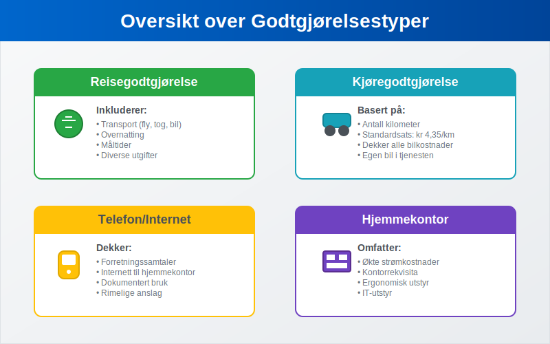
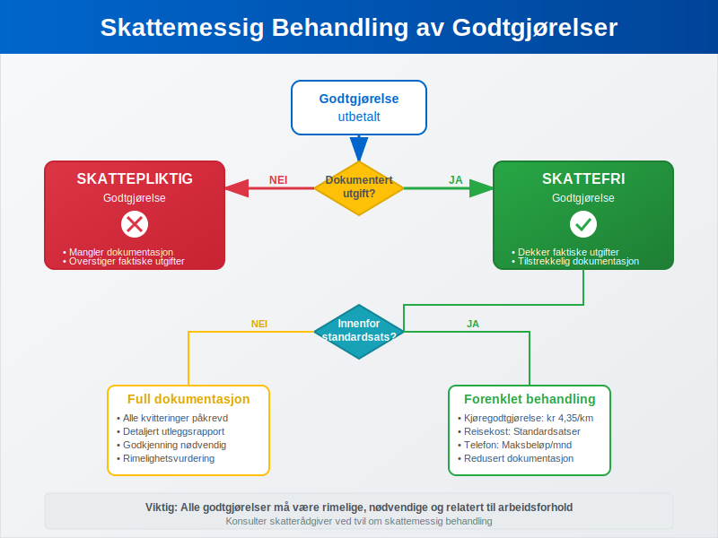
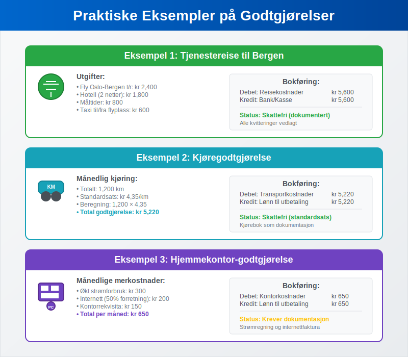

Godtgjørelse i regnskapssammenheng refererer til refusjon eller kompensasjon som utbetales til ansatte, partnere eller andre for utgifter de har hatt på vegne av bedriften. Dette er et sentralt konsept i regnskapsføring og krever nøye håndtering for å sikre korrekt bokføring og skattemessig behandling.
Godtgjørelser skiller seg fra vanlig lønn ved at de kompenserer for faktiske utgifter som er pådratt i arbeidssammenheng, ikke for arbeidsinnsats. Det er også viktig å skille godtgjørelser fra honorar, som er vederlag for utførte tjenester uten tradisjonelt arbeidsforhold. Korrekt håndtering av godtgjørelser er essensielt for å opprettholde god internkontroll og for å sikre at bedriften overholder gjeldende bokføringsregler.
Seksjon 1: Typer Godtgjørelser

Godtgjørelser kan kategoriseres i flere hovedtyper, hver med sine spesifikke regler for behandling og dokumentasjon:
1.1 Reisegodtgjørelse
Reisegodtgjørelse er den vanligste formen for godtgjørelse og dekker utgifter knyttet til tjenestereiser. Dette inkluderer:
- Transport: Fly, tog, buss, drivstoff og bompenger
- Overnatting: Hotell, pensjonat eller andre overnattingssteder
- Måltider: Frokost, lunsj og middag under reisen
- Diverse utgifter: Parkering, taxi, telefon og internett
Reisegodtgjørelser kan utbetales som forskudd før reisen eller som refusjon etter at utgiftene er dokumentert. Mange bedrifter bruker standardiserte satser basert på Skatteetatens anbefalinger for å forenkle administrasjonen.
1.2 Kjøregodtgjørelse
For ansatte som bruker egen bil i tjenesten, utbetales kjøregodtgjørelse basert på antall kilometer kjørt. Skatteetaten fastsetter årlig en standardsats som dekker:
- Drivstoff og vedlikehold
- Forsikring og avgifter
- Verdiforringelse (avskrivning)
| År | Standardsats per km |
|---|---|
| 2024 | kr 4,35 |
| 2023 | kr 4,15 |
| 2022 | kr 3,70 |
1.3 Telefon- og Internetgodtgjørelse
Når ansatte bruker private telefon- og internettjenester i arbeidssammenheng, kan bedriften yte godtgjørelse for den forretningsrelaterte bruken. Dette krever dokumentasjon av faktisk bruk eller kan baseres på rimelige anslag.
1.4 Hjemmekontor-godtgjørelse
Spesielt relevant etter pandemien, kan bedrifter yte godtgjørelse for hjemmekontor-utgifter som:
- Økte strømkostnader
- Kontorrekvisita og utstyr
- Ergonomiske møbler
- IT-utstyr og programvare
Seksjon 2: Skattemessig Behandling

Den skattemessige behandlingen av godtgjørelser avhenger av type, størrelse og dokumentasjon:
2.1 Skattefrie Godtgjørelser
Godtgjørelser som dekker faktiske utgifter med tilstrekkelig dokumentasjon er normalt skattefrie for mottakeren. Dette gjelder når:
- Utgiften er pådratt i arbeidssammenheng
- Beløpet ikke overstiger faktiske kostnader Dokumentasjon (kvitteringer/bilag) foreligger
- Godtgjørelsen er rimelig og nødvendig
2.2 Skattepliktige Godtgjørelser
Godtgjørelser blir skattepliktige når de:
- Overstiger faktiske utgifter
- Mangler tilstrekkelig dokumentasjon
- Gis som fast månedlig beløp uten kobling til faktiske utgifter
- Anses som skjult lønn
2.3 Standardsatser og Forenklingsregler
Skatteetaten har etablert standardsatser for vanlige godtgjørelser som forenkler behandlingen:
- Reisekost innenlands: Faste satser for måltider og overnatting
- Kjøregodtgjørelse: Fast sats per kilometer
- Telefongodtgjørelse: Maksimalbeløp per måned
Bruk av standardsatser reduserer dokumentasjonskravene og forenkler både lønnsbehandling og regnskapsføring.
Seksjon 3: Bokføringsprinsipper
Korrekt bokføring av godtgjørelser krever forståelse av underliggende regnskapsprinsipper og kontostruktur:
3.1 Kontoplan og Kontering
Godtgjørelser bokføres normalt på følgende kontotyper:
- Reisekostnader (konto 6000-6099): For reiserelaterte godtgjørelser
- Transportkostnader (konto 6100-6199): For kjøregodtgjørelse og transport
- Kontorkostnader (konto 6300-6399): For telefon og kontorrekvisita
- Andre driftskostnader: For øvrige godtgjørelser
3.2 Bilagsbehandling og Dokumentasjon
Alle godtgjørelser må dokumenteres gjennom bilagsføring som inkluderer:
- Utleggsrapport: Detaljert oversikt over utgifter
- Originalkvitteringer: For alle utgifter over kr 200 bruk original kvittering
- Reiseregning: Med formål, destinasjon og varighet
- Godkjenning: Fra autorisert person i organisasjonen
Moderne bedrifter bruker ofte digitale løsninger for bilagsmottak som forenkler innsamling og behandling av godtgjørelsesbilag.
3.3 Periodisering og Timing
Godtgjørelser skal bokføres i den perioden utgiften påløper, ikke nødvendigvis når utbetalingen skjer. Dette følger periodiseringsprinsippet i regnskapet.
Seksjon 4: Praktiske Eksempler

Eksempel 1: Tjenestereise til Bergen
En ansatt reiser til Bergen for kundemøte:
Utgifter:
- Fly Oslo-Bergen t/r: kr 2,400
- Hotell (2 netter): kr 1,800
- Måltider: kr 800
- Taxi til/fra flyplass: kr 600
Bokføring:
Debet: Reisekostnader kr 5,600
Kredit: Bank/Kasse kr 5,600
Eksempel 2: Kjøregodtgjørelse
En ansatt kjører 1,200 km i tjenesten i løpet av måneden:
Beregning: 1,200 km × kr 4,35 = kr 5,220
Bokføring:
Debet: Transportkostnader kr 5,220
Kredit: Lønn til utbetaling kr 5,220
Viktig: For å kunne kreve kjøregodtgjørelse må forretningsbruken dokumenteres gjennom systematisk kjørebokføring. Uten korrekt kjørebok risikerer bedriften å miste retten til fradrag ved skattekontroll.
Eksempel 3: Hjemmekontor-godtgjørelse
Månedlig godtgjørelse for hjemmekontor basert på faktiske merkostnader:
Komponenter:
- Økt strømforbruk: kr 300
- Internett (50% forretningsbruk): kr 200
- Kontorrekvisita: kr 150
Total: kr 650 per måned
Seksjon 5: Internkontroll og Rutiner
Effektiv håndtering av godtgjørelser krever etablerte rutiner og kontroller:
5.1 Godkjenningsrutiner
Alle godtgjørelser må gjennom attestering før utbetaling:
- Saklig kontroll: Er utgiften nødvendig og rimelig?
- Formell kontroll: Er dokumentasjonen komplett?
- Økonomisk kontroll: Er beløpet innenfor budsjett og retningslinjer?
5.2 Retningslinjer og Policyer
Bedrifter bør etablere klare retningslinjer som dekker:
- Godkjente utgiftstyper: Hva som kan refunderes
- Beløpsgrenser: Maksimalbeløp for ulike kategorier
- Dokumentasjonskrav: Hvilke bilag som kreves
- Godkjenningsnivåer: Hvem som kan godkjenne ulike beløp
5.3 Digitale Løsninger
Moderne bedrifter implementerer digitale systemer for:
- Utleggsrapportering: Mobile apper for registrering
- Bilagshåndtering: Automatisk OCR og kategorisering
- Godkjenningsflyt: Elektronisk godkjenning og oppfølging
- Integrasjon: Direkte kobling til lønn og regnskap
Seksjon 6: Juridiske Aspekter og Compliance
6.1 Arbeidsmiljøloven
Arbeidsmiljøloven regulerer arbeidsgivers plikt til å dekke nødvendige utgifter:
- § 14-15: Arbeidsgiver skal dekke nødvendige utgifter ved tjenestereiser
- Rimelighetsprinsippet: Utgifter må være rimelige og nødvendige
- Dokumentasjonsplikt: Arbeidstaker må dokumentere utgiftene
6.2 Skatteloven og Forskrifter
Skattemessig behandling reguleres av:
- Skatteloven § 5-1: Definisjon av skattepliktig inntekt
- Skatteloven § 6-44: Fradrag for reisekostnader
- FSFIN (Finansdepartementets forskrift): Detaljerte regler for godtgjørelser
6.3 Bokføringsloven
Bokføringsloven stiller krav til:
- Dokumentasjon: Alle transaksjoner må dokumenteres
- Oppbevaring: Bilag må oppbevares i minimum 5 år
- Sporbarhet: Klar sammenheng mellom bilag og bokføring
Seksjon 7: Utfordringer og Fallgruver
7.1 Vanlige Feil
- Manglende dokumentasjon: Kvitteringer som ikke oppbevares
- Privat vs. forretning: Blanding av private og forretningsrelaterte utgifter
- Overskridelse av satser: Bruk av høyere satser enn tillatt
- Forsinket rapportering: Utgifter som rapporteres for sent
7.2 Risikostyring
For å minimere risiko bør bedrifter:
- Etablere klare retningslinjer for alle typer godtgjørelser
- Implementere systematisk kontroll av alle utbetalinger
- Bruke digitale løsninger for bedre sporbarhet
- Gjennomføre regelmessige revisjoner av godtgjørelsespraksis
7.3 Skattemessige Konsekvenser
Feil håndtering kan føre til:
- Tilleggsskatt for bedriften
- Skatteplikt for ansatte
- Renter og gebyrer fra skattemyndighetene
- Omdømmetap og tillitssvikt
Seksjon 8: Fremtidige Trender
8.1 Digitalisering
Utviklingen går mot:
- Automatisk kategorisering av utgifter
- AI-basert kontroll av rimelighetsvurderinger
- Sanntidsrapportering og godkjenning
- Integrerte løsninger på tvers av systemer
8.2 Regulatoriske Endringer
Forventede endringer inkluderer:
- Strengere dokumentasjonskrav for hjemmekontor
- Nye satser for elektriske kjøretøy
- Utvidede digitale krav for bilagsbehandling
- Harmonisering med EU-regelverk
8.3 Bærekraft og CSR
Økende fokus på:
- Miljøvennlige reisealternativer med høyere godtgjørelser
- Karbonkompensasjon som del av reisepolicyen
- Lokale leverandører for å redusere reisebehov
- Rapportering av miljøpåvirkning fra tjenestereiser
Konklusjon
Godtgjørelser er en kompleks, men viktig del av moderne regnskapsføring som krever grundig forståelse av både regnskapsmessige og skattemessige prinsipper. Korrekt håndtering sikrer ikke bare compliance med gjeldende regelverk, men bidrar også til effektiv driftskostnadsstyring og god internkontroll.
Ved å etablere klare rutiner, bruke moderne digitale løsninger og holde seg oppdatert på regelverksendringer, kan bedrifter håndtere godtgjørelser på en måte som både ivaretar ansattes behov og bedriftens økonomiske interesser. Dette bidrar til å styrke tilliten mellom arbeidsgiver og arbeidstaker, samtidig som det sikrer korrekt regnskapsføring og skattemessig behandling.
For bedrifter som ønsker å optimalisere sin håndtering av godtgjørelser, anbefales det å gjennomgå eksisterende rutiner regelmessig og vurdere implementering av moderne digitale løsninger som kan automatisere og forenkle prosessene.